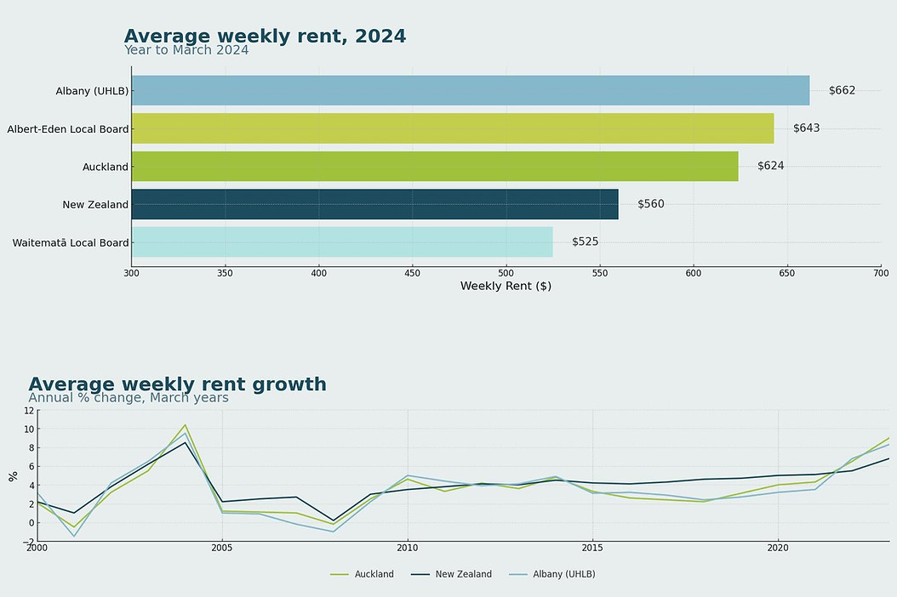
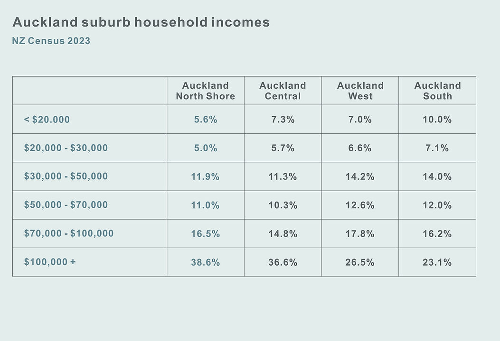
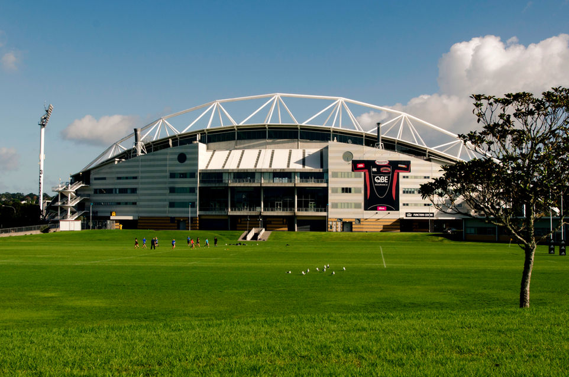
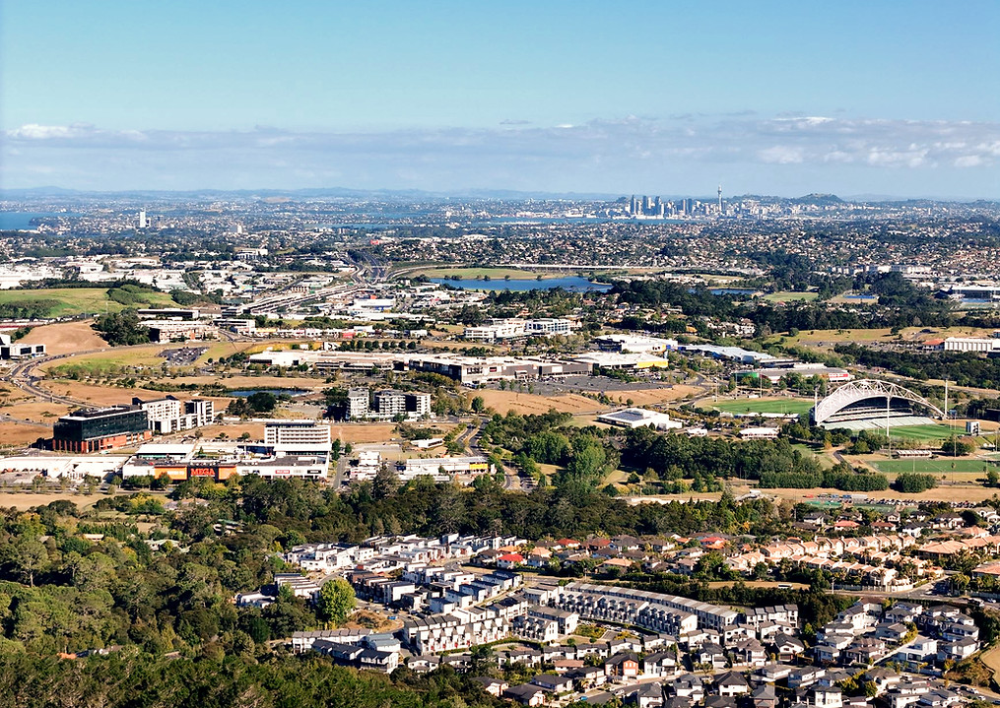
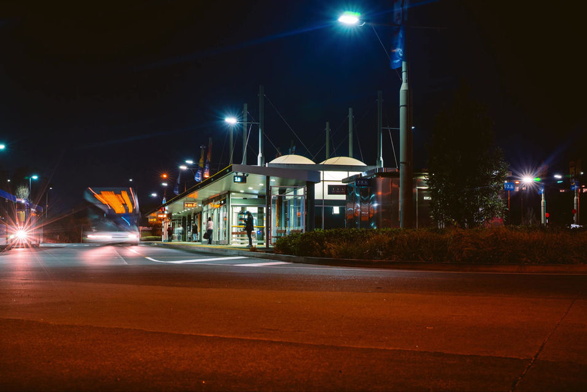
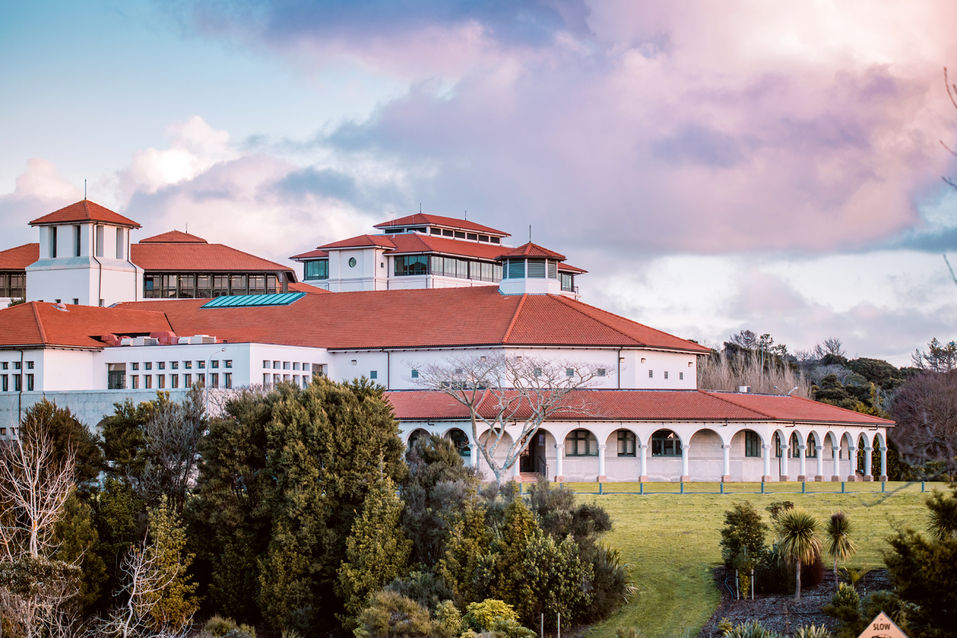
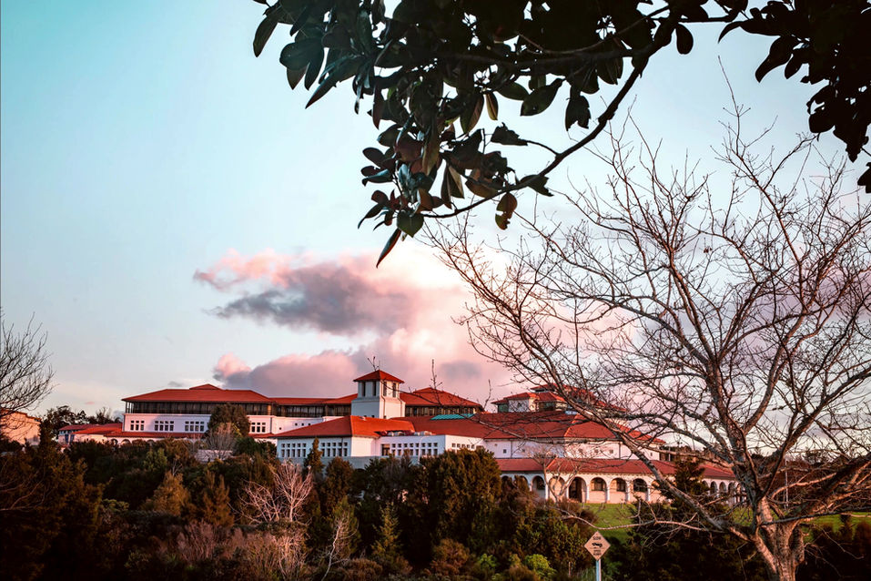
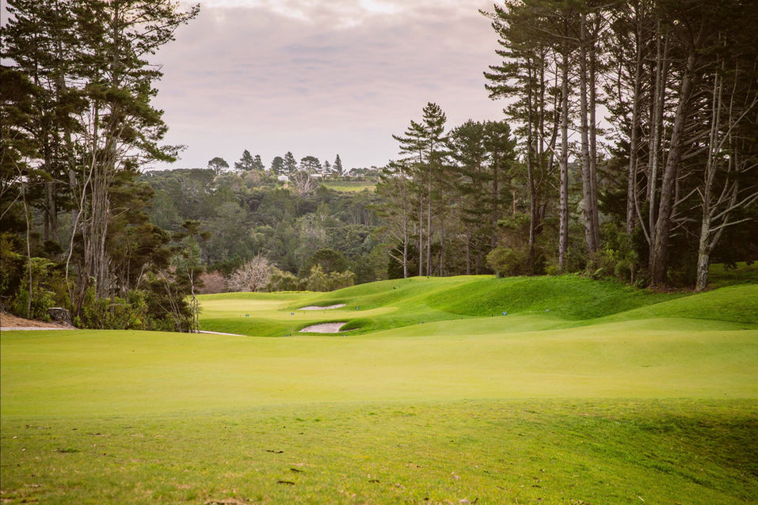
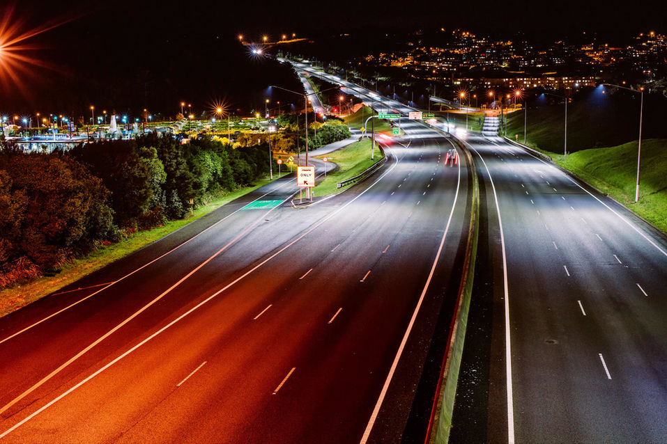
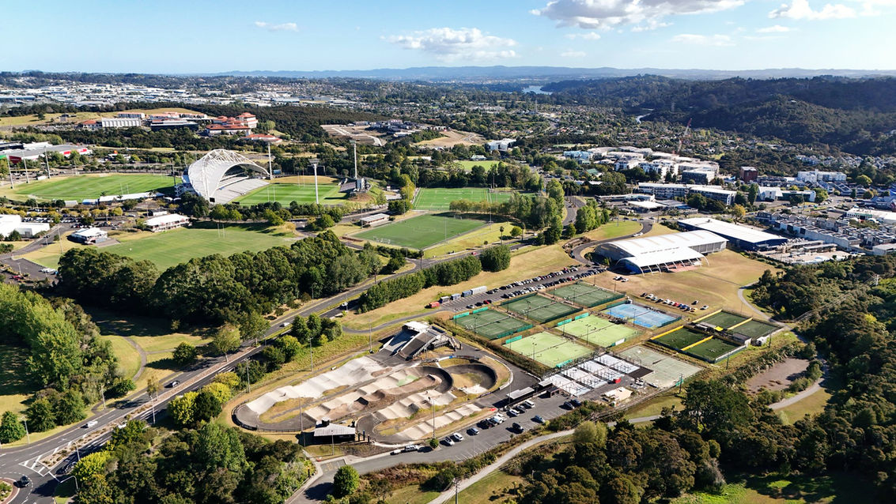

00Overview
Albany stands as one of Auckland’s most rapidly expanding metropolitan areas—a strategically masterplanned precinct that seamlessly integrates swift population growth, superior infrastructure, and a notably undersupplied rental market.
Positioned as a pivotal urban node within Auckland’s future city framework, Albany is a dynamic hub where commercial, residential, and lifestyle elements converge. Significant investments in transport, education, and retail infrastructure are propelling Albany to become the primary growth corridor and has been identified for significant growth and intensification over the next 30 years.
Today, Albany offers unique features that make it an attractive place to live and invest. For example, it boasts a large Mega Centre, the 25,000-seat North Harbour Stadium, Westfield Shopping Centre and Massey University. These amenities contribute to a vibrant community with excellent education and leisure options. Albany has become both a residential and commercial hub.
Albany is also one of Auckland’s most connected metropolitan centres — served by the Northern Busway, New Zealand’s only true Bus Rapid Transit (BRT) system. With fully separated lanes and dedicated stations, it delivers fast, reliable, high-frequency services to the CBD in under 25 minutes. For Build-To-Rent, this isn’t just convenient — it’s essential.
The video "A Thriving Albany" was produced for O.K.L.A. - Build to Rent by DGJUSTIN in 2025
02The Rental Market
Robust Local Rental Market & Outstanding Long-Term Growth
Albany's rental market commands premium rates, reflecting its desirability and the quality of housing stock. As of March 2024, the average weekly rent for Albany ( Upper Harbour Local Board ) is $662, surpassing the Auckland average and many other Auckland suburbs. This indicates a strong and affluent tenant base, ideal for Build to Rent (BTR) developments. Backed by national rental trends, New Zealand has seen 6.9% annual rental growth in the year to March 2024, and an average of 4.61% annual growth since 2000. These fundamentals support a resilient, income-generating environment for long-term BTR assets.
Source: Infometrics · CoreLogic Suburb Statistics Report


High-Value BTR Customer Base
The North Shore, where Albany is the primary growth hub, represents one of Auckland’s most affluent and professionally concentrated populations. 38.6% of households earn over $100,000, well above all the other districts. These income levels and a high share of professionals and managers (40.8%) indicate a stable, upwardly mobile tenant base with expectations of quality and long-term living environments. Critically, 71.7% of households in the North Shore are one-family homes, underscoring strong demand for multi-bedroom, community-based living. With 26% of residents holding a bachelor's degree or higher and many priced out of ownership in neighbouring bayside suburbs, this demographic is ideally positioned for quality Build to Rent offerings.
0
Average weekly rent, Mar 2024
0
Households over $100,000
0
Annual rental growth on BTR units
0
25-year North Shore CAGR
Proven Rental Performance: Over Five Years of Operational Track Record
Kingsman Development is not merely entering the BTR sector in Albany, we are already an established operator in this market. Within our first-phase development at O.K.L.A, we currently manage over 40 long-term rental apartments, including 20 self-owned BTR units. This makes us the only active BTR provider in Albany Centre with a proven operational track record. Over more than five years of management, our BTR portfolio has consistently delivered:
Annual rental growth of 5.3% on BTR units
Average re-leasing periods under 7 days, outperforming local market averages
Exceptionally low vacancy & turnover rates
Initial average lease-out period < 60 days
These performance indicators are based on real-world operations, not projections, validating both market demand and Kingsman’s capability to scale institutional-grade BTR in Albany with confidence.
Source: Kingsman Rental Report


Low Supply, Proven Capital Growth: The North Shore Apartment Market
Over the past 25 years, North Shore’s apartment sector has demonstrated sustained capital appreciation, with an average compound annual growth rate of 5.79%, rising to 6.67% when excluding one outlier project. These figures come from a sample of nearly 300 multi-unit apartment developments tracked between 1999 and 2024. Yet despite this strong capital growth, the rate of new apartment delivery across the Albany catchment remains structurally constrained. This chronic undersupply, in the face of rising demand, has created a market dynamic where ownership has become increasingly inaccessible (with Albany’s median house price exceeding $1.09 million) and high-quality rental supply is critically lacking. For institutional investors, this represents a rare intersection: a historically proven ownership market with limited competition in the rental segment, where BTR can thrive as a differentiated, long-hold asset class.
Copyright: Kingsman Development ( LIIG Group )

Retail & Lifestyle: Convenience Amplified
Residents enjoy walkable access to Westfield Albany, one of New Zealand’s largest shopping centers, featuring over 140 specialty stores, major retailers like Farmers and Kmart, a cinema complex, and a variety of dining options.
Adjacent to it is the Albany Mega Centre, offering a range of big-box retailers and specialty stores, providing comprehensive shopping convenience.
Westfield Albany — 140+ specialty stores

Albany Mega Centre
Massey University — Auckland campus, Albany


Kristin School & Pinehurst School precinct
Education & Institutions: From Top Schools to Global Universities
Albany is home to some of Auckland’s most prestigious educational institutions, offering a comprehensive range of academic opportunities from early learning to tertiary education. Albany is anchored by Massey University’s Auckland campus, renowned for its strengths in business, sciences, and education. The campus attracts local & international students, and contributes significantly to the local economy.
Kristin School – is an International Baccalaureate (IB) Continuum World School with a 100% IB Diploma pass rate and university entrance success.
Pinehurst School – Pinehurst delivers top global results under the Cambridge curriculum, with capped enrolments ensuring academic focus.
This world-class educational ecosystem makes Albany an attractive location for families and students, reinforcing its suitability for Build-to-Rent developments targeting these demographics.
Sports Infrastructure: Where Active Living Meets Unmatched Recreation Hub
Albany is unmatched in the breadth and quality of its recreational and sports infrastructure, arguably one of the most complete sporting precincts in Auckland, if not all of New Zealand.
At the centre sits North Harbour Stadium, a professional-grade venue for rugby, football and major events. Surrounding it is a concentrated network of world-class facilities, including:
National Hockey Centre – Home of Hockey NZ, with international-standard turf
Albany Stadium Pool – A modern aquatic centre with competition lanes
North Harbour BMX Track – A high-performance venue for both recreation and competitive racing
Tennis Courts & Athletics Tracks – Integrated into public precincts
Rosedale Park – A major multi-sport zone supporting softball, baseball, cricket and hockey
North Harbour Stadium

North Shore Golf Club — 27 holes
Northern Busway — CBD in under 25 minutes

SH1 & SH18 motorway access
Transportation: Connected Living in a Strategic Transport Hub
Albany is not just well-connected, it’s uniquely positioned on New Zealand’s most advanced bus transit infrastructure. The Northern Busway is a fully separated Bus Rapid Transit (BRT) corridor, offering frequent, high-speed, congestion-free access to Auckland’s CBD in under 25 minutes, even at peak hour.
Albany’s BRT station integrates with major park-and-ride hubs, cycling routes, and feeder services, creating a seamless, multi-modal commuting experience for residents.
SH1 and SH18 Access: Direct motorway links to all major Auckland employment centres
Build-To-Rent developments perform best in high-amenity, transit-oriented locations. Albany is uniquely positioned to meet this demand. With its integration into Auckland’s Northern Busway, future-proofed motorway links, and pedestrian-friendly planning, Albany offers a level of connectivity few other precincts can match.
Green Networks & Natural Living: Nature at Your Doorstep
Albany is enveloped by a tapestry of lush reserves and waterways, offering residents unparalleled natural access. From the Hooton Reserve, featuring scenic walkways and cycle paths, to the historic Lucas Creek, which once served as a vital transportation route for early Māori and European settlers, the area is steeped in natural beauty and history.
For golf enthusiasts, the North Shore Golf Club presents a unique 27-hole course—the only one of its kind in Auckland—providing diverse playing options amidst tree-lined fairways.
Beach lovers will appreciate the proximity to Browns Bay, just a 10-minute drive away, offering a vibrant seaside community, and Long Bay Regional Park, a 15-minute drive, featuring a sheltered beach and expansive parkland perfect for picnics and coastal walks.
This harmonious blend of green spaces, historical significance, and coastal accessibility makes Albany an ideal location for those seeking a lifestyle that balances urban convenience with natural serenity.
Hooton Reserve & Lucas Creek

Long Bay Regional Park & Browns Bay
{{ lbImgNode }}
{{ lbVidNode }}